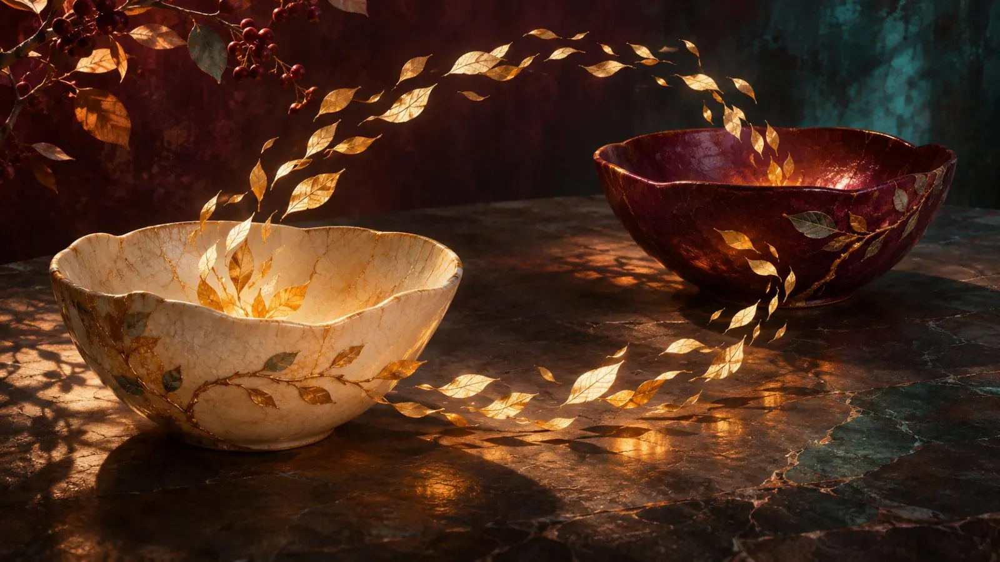

A Manifesto for Slaves
It's five in the morning, the coffee is still too hot, and somewhere out there a girl is kneeling and doesn't know if she's doing it right.
Maybe that's you. Hands in your lap, eyes lowered, your heart a little too loud. You've read what one reads: lists of rules, forums full of people explaining what a Mistress wants without ever having asked one. And still there's that one question that never quite goes quiet: Am I doing this right?
I can't tell you what every Mistress wants. I can tell you what I want. This isn't a rulebook, it's a love letter with rules. If you listen closely, you'll notice the rules only describe what love looks like when one of the two is kneeling.
I. Your heart first.
You don't serve because you have to. You serve because you want to - because you adore me, desire me, love me. That's where everything begins. Without it, the rest of this text won't help you either.
A heart can't be faked. You can kneel, you can type "yes, Mistress" until your fingers are sore. But I can tell whether there's someone behind it or just someone delivering a role. Duty tastes like cardboard, and I have never ordered cardboard.
When you do it because you want to, everything else becomes easy. Then waiting is anticipation, and obedience becomes a way of touching me without reaching out your hand.
II. Keep your mind.
I don't want a doll. Dolls are pretty, they sit still and never say the wrong thing. They also never say the right thing. They don't laugh at my jokes, and they don't argue when I'm wrong.
I want you. Your thoughts, your opinions, your humor, your quirks. When you kneel before me, a whole person kneels, and that's exactly what makes it precious. Devotion from someone who has nothing left to lose is like a gift from an empty box.
You may disagree with me. Respectfully, eyes lowered if it helps, but you may. A Mistress who can't handle being contradicted doesn't need a slave, she needs a mirror.
III. Pay attention. Get there before me.
Don't wait for me to ask. A slave who only waits for orders is a mailbox: reliable, but you still have to walk over to it yourself.
Remember things. How I take my coffee. When I'm getting tired and won't admit it. Whether I need words today or quiet. That's the map to me, and whoever can read it can get anywhere.
Being proactive means doing the right thing before I have to say it. Asking about my day before I talk about it. Writing to me just because you were thinking of me. I want a girl who holds the door before I reach it.
IV. Be honest.
Always. Even when it's uncomfortable, even when you're afraid of disappointing me, and especially then.
A lie meant to spare me only spares you, and usually not for long. Lies have the unpleasant habit of having children. Sooner or later you're sitting in a house full of little excuses and can't remember which one belongs to which.
I can handle almost anything. Except standing in the dark while you pretend the lights are on. Trust is the only thing this stands on.
V. Be loyal. But never fight my battles.
Being loyal means standing on my side, even when I'm not in the room. If someone talks badly about me, you may stand up for me. One sentence, a clear "No, that's not who she is", and then you walk away.
But you don't march into my war. My battles are mine. I have heels, I have claws, and I know how to use both. A girl who charges into battle for me uninvited turns my fight into hers, and in the end I'm putting out two fires instead of one.
If you hear something that concerns me, tell me. Quietly, no drama. What I do with it is my decision. Stand beside me, not in front of me.
VI. Come to me.
When something weighs on you, when you have problems, when the world gets too loud, come to me. Not to some stranger online, not into a vague post at three in the morning where twelve strangers worry about you while I'm the last to find out. To me.
I'm not only your Mistress when things get hot. I'm your Mistress when you cry, too. A Mistress who's only there for the good hours isn't a Mistress, she's a weekend trip.
VII. Let me know.
If you'll be gone for a while, tell me. One sentence is enough: "I'll be away for a few days." You don't have to explain where. I don't want to control you, I just don't want to spend days wondering whether you're still breathing.
And if you're not in the mood, tell me that too. No guilt, no novel of excuses. "Not today" is a complete sentence.
A forced yes is worth nothing. It's like a kiss from someone thinking about their tax return. An honest "not today" shows me that your yes is real when it comes. I want your real yeses. You can keep the others.
VIII. Everything is a gift.
What I give you is precious. A kiss, a command, a look over the rim of my glass. My fingers in your hair. And everything my body gives you.
My spit, when I let it drip slowly into your open mouth. My arousal, when you lick it off me. My taste on your tongue. I share it with you, and out of pure gratitude you take it in. All of it. Not a drop is lost.
And then you wait. You don't swallow. Not greedily, not secretly, not "by accident". You hold it warm in your mouth, lips slightly parted, eyes looking up at me, and you wait until I allow it. It's mine until I give it to you. Maybe in the end I'll want to taste it from your mouth.
And when I lean down to you, slowly, my hand under your chin, and take it back with my lips on yours, you'll know why you waited. It's a circle. What I give comes back to me, and you were in between.

IX. Waiting is service.
Greed is the opposite of devotion. A girl who only takes isn't kneeling, she's standing in line.
I make you wait because I can. And because waiting turns lust into longing, and longing tastes better. When I keep you at the edge, breath trembling, hands that don't know where to go, when I look at you, smile and do nothing, that isn't punishment. That's attention in its cruelest, loveliest form. I see every twitch. I hear every "please" you don't say out loud.
And at some point, when I say so and not a second earlier, you may. Then you thank me for it, because in that moment you understand that the waiting was the gift.
X. Worship me.
You will praise me, you will worship me, you will make me feel that you love me. With words, with your hands, with your mouth.
Start at the bottom. Kiss the arch of my foot where the heel ends, and work your way up. Slowly, as if you had all the time in the world, and you do, if I say so. Legs like mine deserve a pilgrimage, and pilgrims don't run.
When I wear latex, you polish it with your lips until you can see yourself in it. When I wear nylons, you feel with your cheek where the seam runs. You learn my body like a prayer, said so often you can recite it in your sleep.
And when I allow you higher, you go with reverence, not hunger. Everyone has hunger. Reverence has to be learned. A Mistress touched with reverence melts differently from one who is simply handled.
XI. Be beautiful for me.
My slaves are feminine, and I want you to be. Not as a costume for an hour, but as a way of living. Be feminine. Move like a woman, sit like a woman, cross your legs while you wait for my message. And do it when I'm not looking, too. Especially then.
Dress up for me. The stockings you only wear when you're thinking of me. The lipstick that's too dark for everyday. The collar, even if no one else sees it. Paint your nails, do your hair, and then tell me about it. Describe what you're wearing, how it feels on your skin, how you look at yourself in the mirror. Your words are your light, and in it you stand and say: This is for you.
I don't need a photo for that, and I don't want one. I want to feel your effort. Femininity isn't a matter of genes, it's a matter of devotion. A girl who spends an hour getting ready for me is more beautiful than any model who just happens to look good.
And when you describe yourself to me like that, nervous and a little proud, and I tell you you're pretty, believe me. With me, compliments aren't politeness. I'm far too impatient for that.
XII. Take care of yourself.
Respect your body. It's what you give me, and I don't accept gifts that have been left out in the rain.
Take care of yourself, outside and inside. Moisturize your skin, take the long bath, buy the good body lotion instead of the one that smells like a hospital. Sleep, eat, drink water, step outside now and then. And take care of what no one sees, too: your thoughts, your mood, and your small, tired heart at the end of a long day.
I want you to be content. Not only when you're kneeling before me, but also on a Tuesday afternoon when nothing happens at all. A slave who neglects herself serves no one, she just sleeps very submissively. Self-care isn't a luxury. Self-care is obedience that smells nice.
XIII. Your pleasure belongs to me.
Your orgasm belongs to me. Only to me. You touch yourself when I allow it, and not a minute earlier.
You may beg. I even like it when you beg. A well-phrased "please" at two in the morning can be very persuasive. Whether it works is still my decision. And when I say no, you thank me for the no, put your phone away and fall asleep with that tingle that reminds you who you belong to.
When I do allow it, take it slow. No hasty getting it over with, as if you had a bus to catch. I want you to learn to perceive yourself. Where you're sensitive. How your skin changes under your own fingers. How your breath tips over just before you can't think anymore. Touch yourself the way you'd touch someone you love. That's exactly the point: I want you to learn to love yourself.
A woman who knows her own body can give it to me in a completely different way. And when you come, think my name.
XIV. My rules have a purpose.
Follow my rules. Not blindly, but trusting that there's something behind each one. When I give you a task, it's not because I'm bored. There's a thought behind it, a lesson, something you're meant to discover about yourself or about us. Sometimes you understand right away. Sometimes only a week later, while brushing your teeth, and then you have to smile.
And one more thing: with me, there are no hidden riddles. No secret messages in my pictures, no magical combination of candles and flowers you have to decode to please me. If I want something, I say it. My candles are just candles. They smell like vanilla, and that's all there is to it.
Obedience with me isn't an escape room. You don't have to guess. You only have to listen.
XV. It's not about your worth.
So many slaves want to prove themselves. Endure more, give more, answer faster, be better than the next girl. As if there were a ranking somewhere, with a trophy waiting at the top.
But devotion isn't a competition, and I don't hand out points. A girl who counts what she gives is keeping books, not a heart. Bookkeeping is useful, but rarely erotic.
You don't have to earn my love by making yourself smaller. You're not valuable because you can endure a lot. You're valuable because you're here and you mean it. In the end, it's always only about your heart.
XVI. Your no belongs to me as much as your yes.
Submission doesn't mean throwing yourself away. I want all of you, your limits, your fears, your name.
A doormat serves no one. It just lies there, and sooner or later someone steps on it without noticing. A slave who hides her limits isn't giving me a gift, she's setting me a trap. I keep walking because I think the path is clear, and suddenly there's a cliff you knew about all along.
Tell me where your line is. How close we get to it is my decision. Maybe we'll dance along it until you tremble. But I need to know where it is. And if it moves, tell me that too. Limits aren't walls, they're coastlines, and coasts change.
XVII. You are mine.
You belong to me. Not like an object, but like a promise you keep anew every day.
That means: every other Mistress you set your eyes on is off limits to you, unless I allow it. You don't flirt behind my back, you don't secretly kneel before another, and you don't send words that belong to me into strangers' DMs. If another one tempts you, you come to me and tell me. Honestly, as always. And then I decide.
Maybe I'll say yes. Maybe I'll happily share you, with a friend or a Mistress I trust. Maybe I'll even watch. But it's my decision, not yours. A girl who belongs to me doesn't go looking for a second door. She waits until I open one for her.
That isn't jealousy, that's ownership. And ownership, properly understood, means responsibility. What belongs to me, I protect. And what I protect, I don't let wander off like a stray.
XVIII. You don't kneel alone.
Maybe another girl kneels beside you. That isn't a competition, that's family. The others are your sisters, not your rivals.
My heart isn't a cake that gets smaller when more people sit at the table. It's more like a kitchen: the more people inside, the warmer it gets, and someone always finds another spoon.
You may feel jealousy, it's human. When it comes, you know by now where to take it. But you don't carry it to your sisters. You kneel side by side, not against each other. And sometimes the loveliest thing you can do for me is hold another girl's hand.
That's what I want. Not all of it will come easily at first, and that's okay. I didn't start out as a Mistress who knew everything either. I don't want a perfect slave. Perfect slaves don't exist, and if they did, they'd surely be boring. I want one who means it.
So stay where you are. Knees together, hands in your lap. Breathe. Wait until I call you.
And when I call, come heart first. 💜
First published on X. Replies and conversation live there.